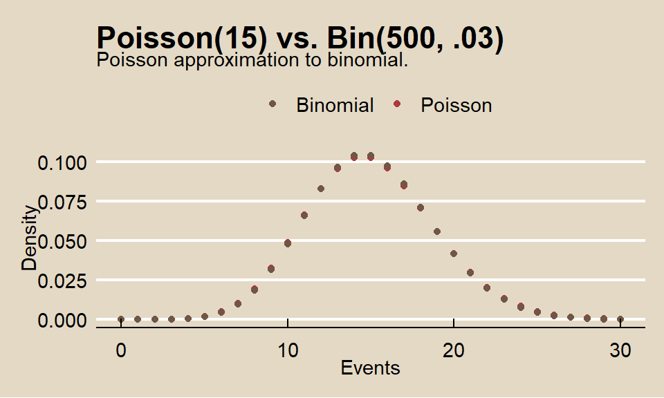

1.3 Continuous Distributions
1.3.1 Normal
Random variable \(X\) is distributed \(X \sim N(\mu, \sigma^2)\) if
\[f(X)=\frac{{1}}{{\sigma \sqrt{{2\pi}}}}e^{-.5(\frac{{x-\mu}}{{\sigma}})^2}\].
Example
IQ scores are distributed \(X \sim N(100, 16^2\). What is the probability a randomly selected person’s IQ is <90?
my_mean = 100
my_sd = 16
my_x = 90
# exact
pnorm(q = my_x, mean = my_mean, sd = my_sd, lower.tail = TRUE)## [1] 0.27## [1] 0.26library(dplyr)
library(ggplot2)
data.frame(x = 0:1500 / 10,
prob = pnorm(q = 0:1500 / 10,
mean = my_mean,
sd = my_sd,
lower.tail = TRUE)) %>%
mutate(cdf = ifelse(x > 0 & x <= my_x, prob, 0)) %>%
ggplot() +
geom_line(aes(x = x, y = prob)) +
geom_area(aes(x = x, y = cdf), alpha = 0.3) +
labs(title = bquote('X~N('~mu==.(my_mean)~','~sigma^{2}==.(my_sd)^{2}~')'),
subtitle = bquote('P(X<='~.(my_x)~') when mean is'~.(my_mean)~' and variance is'~.(my_sd)^{2}~'.'),
x = "x",
y = "Probability") 
1.3.2 Example
IQ scores are distributed \(X \sim N(100, 16^2\). What is the probability a randomly selected person’s IQ is >140?
my_mean = 100
my_sd = 16
my_x = 140
# exact
pnorm(q = my_x, mean = my_mean, sd = my_sd, lower.tail = FALSE)## [1] 0.0062## [1] 0.0067library(dplyr)
library(ggplot2)
data.frame(x = 0:1500 / 10,
prob = pnorm(q = 0:1500 / 10,
mean = my_mean,
sd = my_sd,
lower.tail = TRUE)) %>%
mutate(cdf = ifelse(x > my_x & x < 1000, prob, 0)) %>%
ggplot() +
geom_line(aes(x = x, y = prob)) +
geom_area(aes(x = x, y = cdf), alpha = 0.3) +
labs(title = bquote('X~N('~mu==.(my_mean)~','~sigma^{2}==.(my_sd)^{2}~')'),
subtitle = bquote('P(X<='~.(my_x)~') when mean is'~.(my_mean)~' and variance is'~.(my_sd)^{2}~'.'),
x = "x",
y = "Probability") 
1.3.3 Example
IQ scores are distributed \(X \sim N(100, 16^2\). What is the probability a randomly selected person’s IQ is between 92 and 114?
my_mean = 100
my_sd = 16
my_x_l = 92
my_x_h = 114
# exact
pnorm(q = my_x_h, mean = my_mean, sd = my_sd, lower.tail = TRUE) -
pnorm(q = my_x_l, mean = my_mean, sd = my_sd, lower.tail = TRUE)## [1] 0.5library(dplyr)
library(ggplot2)
data.frame(x = 0:1500 / 10,
prob = pnorm(q = 0:1500 / 10,
mean = my_mean,
sd = my_sd,
lower.tail = TRUE)) %>%
mutate(cdf = ifelse(x > my_x_l & x <= my_x_h, prob, 0)) %>%
ggplot() +
geom_line(aes(x = x, y = prob)) +
geom_area(aes(x = x, y = cdf), alpha = 0.3) +
labs(title = bquote('X~N('~mu==.(my_mean)~','~sigma^{2}==.(my_sd)^{2}~')'),
subtitle = bquote('P(X<='~.(my_x)~') when mean is'~.(my_mean)~' and variance is'~.(my_sd)^{2}~'.'),
x = "x",
y = "Probability") 
1.3.4 Example
Class scores are distributed \(X \sim N(70, 10^2\). If the instructor wants to give A’s to >=85th percentile and B’s to 75th-85th percentile, what are the cutoffs?
my_mean = 70
my_sd = 10
my_pct_l = .75
my_pct_h = .85
qnorm(p = my_pct_l, mean = my_mean, sd = my_sd, lower.tail = TRUE)## [1] 77## [1] 80library(dplyr)
library(ggplot2)
data.frame(x = 0:1000 / 10,
prob = pnorm(q = 0:1000 / 10,
mean = my_mean,
sd = my_sd,
lower.tail = TRUE)) %>%
mutate(cdf = ifelse(prob > my_pct_l & prob <= my_pct_h, prob, 0)) %>%
ggplot() +
geom_line(aes(x = x, y = prob)) +
geom_area(aes(x = x, y = cdf), alpha = 0.3) +
labs(title = bquote('X~N('~mu==.(my_mean)~','~sigma^{2}==.(my_sd)^{2}~')'),
subtitle = bquote('P(X<=x) = ['~.(my_pct_l)~','~.(my_pct_h)~'] when mean is'~.(my_mean)~' and variance is'~.(my_sd)^{2}~'.'),
x = "x",
y = "Probability") 
1.3.5 Normal Approximation to Binomial
The CLT implies that certain distributions can be approximated by the normal distribution.
The binomial distribution \(X \sim B(n,p)\) is approximately normal with mean \(\mu = n p\) and variance \(\sigma^2=np(1-p)\). The approximation is useful when the expected number of successes and failures is at least 5: \(np>=5\) and \(n(1-p)>=5\).
1.3.6 Example
A measure requires p>=50% popular to pass. A sample of n=1,000 yields x=460 approvals. What is the probability that the overall population approves, P(X)>0.5?
my_x = 460
my_p = 0.50
my_n = 1000
my_mean = my_p * my_n
my_sd = round(sqrt(my_n * my_p * (1 - my_p)), 1)
# Exact binomial
pbinom(q = my_x, size = my_n, prob = my_p, lower.tail = TRUE)## [1] 0.0062# Normal approximation
pnorm(q = my_x, mean = my_p * my_n, sd = sqrt(my_n * my_p * (1 - my_p)), lower.tail = TRUE)## [1] 0.0057library(dplyr)
library(ggplot2)
library(tidyr)
data.frame(x = 400:600,
Normal = pnorm(q = 400:600,
mean = my_p * my_n,
sd = sqrt(my_n * my_p * (1 - my_p)),
lower.tail = TRUE),
Binomial = pbinom(q = 400:600,
size = my_n,
prob = my_p,
lower.tail = TRUE)) %>%
gather(key = "Distribution", value = "cdf", c(-x)) %>%
ggplot(aes(x = x, y = cdf, color = Distribution)) +
geom_line() +
labs(title = bquote('X~B(n='~.(my_n)~', p='~.(my_p)~'), '~'X~N('~mu==.(my_mean)~','~sigma^{2}==.(my_sd)^{2}~')'),
subtitle = "Normal approximation to the binomial",
x = "x",
y = "Probability") 
The Poisson distribution \(x~P(\lambda)\) is approximately normal with mean \(\mu = \lambda\) and variance \(\sigma^2 = \lambda\), for large values of \(\lambda\).
1.3.7 Example
The annual number of earthquakes registering at least 2.5 on the Richter Scale and having an epicenter within 40 miles of downtown Memphis follows a Poisson distribution with mean \(\lambda=6.5\). What is the probability that at least \(x>=9\)* such earthquakes will strike next year?*
my_x = 9
my_lambda = 6.5
my_sd = round(sqrt(my_lambda), 2)
# Exact Poisson
ppois(q = my_x - 1, lambda = my_lambda, lower.tail = FALSE)## [1] 0.21## [1] 0.22library(dplyr)
library(ggplot2)
library(tidyr)
data.frame(x = 0:200 / 10,
Normal = pnorm(q = 0:200 / 10,
mean = my_lambda,
sd = my_sd,
lower.tail = TRUE),
Poisson = ppois(q = 0:200 / 10,
lambda = my_lambda,
lower.tail = TRUE)) %>%
gather(key = "Distribution", value = "cdf", c(-x)) %>%
ggplot(aes(x = x, y = cdf, color = Distribution)) +
geom_line() +
labs(title = bquote('X~P('~lambda~'='~.(my_lambda)~'), '~'X~N('~mu==.(my_lambda)~','~sigma^{2}==.(my_lambda)~')'),
subtitle = "Normal approximation to the Poisson",
x = "x",
y = "Probability") 
1.3.8 From Sample to Population
Suppose a person’s blood pressure typically measures 160?20 mm. If one takes n=5 blood pressure readings, what is the probability the average will be <=150?
my_mu = 160
my_sigma = 20
my_n = 5
my_x = 150
my_se = round(my_sigma / sqrt(my_n), 1)
pnorm(q = my_x, mean = my_mu, sd = my_sigma / sqrt(my_n), lower.tail = TRUE)## [1] 0.13library(dplyr)
library(ggplot2)
data.frame(x = 1000:2000 / 10,
prob = pnorm(q = 1000:2000 / 10,
mean = my_mu,
sd = my_sigma / sqrt(my_n),
lower.tail = TRUE)) %>%
mutate(cdf = ifelse(x > 0 & x <= my_x, prob, 0)) %>%
ggplot() +
geom_line(aes(x = x, y = prob)) +
geom_area(aes(x = x, y = cdf), alpha = 0.3) +
labs(title = bquote('X~N('~mu==.(my_mu)~','~sigma^{2}==.(my_se)^{2}~')'),
subtitle = bquote('P(X<='~.(my_x)~') when mean is'~.(my_mu)~' and variance is'~sigma~'/sqrt(n)'~.(my_se)^{2}~'.'),
x = "x",
y = "Probability")